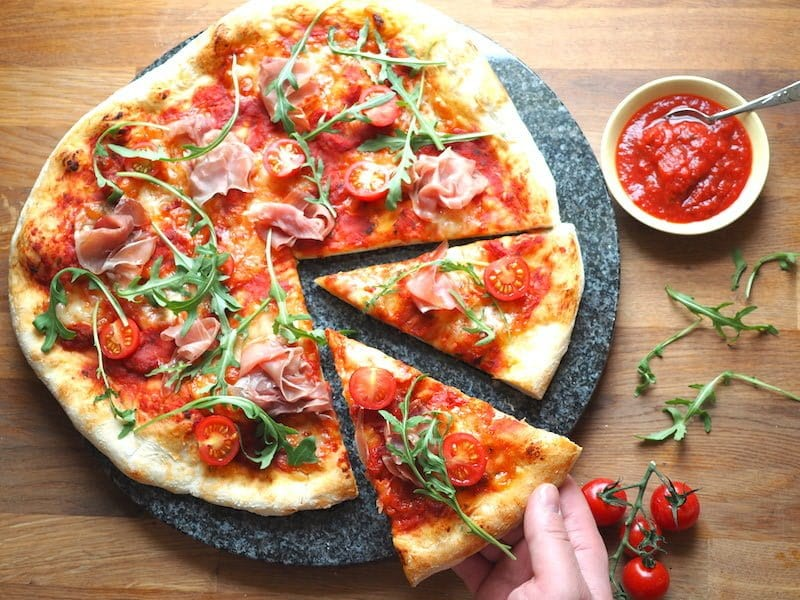

Ciekawe święta
Dzień pizzy
przypada na 9 lutego.
Wielu z nas dałoby się nieraz pokroić za kawałek pizzy, nic więc dziwnego, że ten okrągły przysmak doczekał się swojego święta.
Nie znaczy to bynajmniej, że w pozostałe dni obowiązuje abstynencja – codziennie bowiem sprzedawanych jest na świecie ok. 13 milionów pudełek pizzy.
Najpopularniejszym rodzajem serowego smakołyku jest niezmiennie margherita (jeden z wariantów pizzy neapolitańskiej).
Swoją nazwę zawdzięcza królowej Włoch – Marghericie Sabaudzkiej – która w 1889 roku podczas wizyty w Neapolu miała zasmakować pierwszej współczesnej pizzy, przygotowanej na jej cześć przez miejscowego piekarza.
Dziś neapolitana chroniona jest certyfikatem TSG (ang. „świadectwo szczególnego charakteru”) wydawanym przez Komisję Europejską. Oznacza to, że tę odmianę włoskiego specjału przyrządzać można wyłącznie według ściśle określonej, tradycyjnej receptury.
Bo z pizzą jest jak z zespołem rockowym: liczy się doskonały skład i wyśmienite kawałki.
